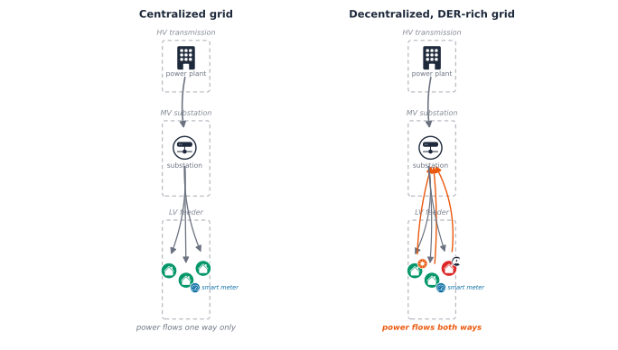

Backed by OpenDSSDirect.py, no external OpenDSS install needed on any OSChapter 1: Modeling the Low-Voltage Network
The preface opened on a feeder that tripped three times in one July, on a street with no history of trouble. The substation reported nothing wrong. What changed had happened behind the meters: a few new Electric Vehicle (EV) chargers, a dozen rooftop solar installs, a heat wave. The data that would have shown it coming was sitting unread in fifteen-minute meter reads.
Here is the more precise version of that same problem. A smart meter reports active and reactive power at exactly one point: the customer’s connection. It says nothing about the voltage one pole over, whether the phases feeding three houses on the same street are balanced, or how close a transformer is running to its thermal limit. A Distribution System Operator (DSO) cannot read any of that off a meter, no matter how many meters it has, because none of it is what a meter measures. This chapter builds the tool this book uses to see it anyway: a real, small low-voltage network, modeled and solved with open-source power-flow software, the same network every later chapter in this part reuses.
The low-voltage network
Every home and business gets electricity through the same three-tier chain. A power plant generates it. High Voltage (HV) transmission lines carry it over long distances, hundreds of kilovolts, built for distance, not for reaching individual buildings. A substation steps that down to Medium Voltage (MV), typically single-digit to tens of kilovolts, for regional distribution. Finally, a local distribution transformer, often the grey cylinder on a pole or the green cabinet on a street corner, steps MV down to Low Voltage (LV), the 230/400V range a house’s own wiring can actually use. The low-voltage network is that last tier: everything from the local transformer to the meter on the wall.
A real feeder branches the way a tree does: one three-phase backbone leaves the transformer, then splits into single-phase taps, called service drops, each reaching one customer, dozens of them on a real feeder. The left side of Figure 8.1 shows this chain: power has moved exactly one way for decades, plant to customer, no exceptions.
Why that stopped being true
The right side of the same diagram is what changed. Clean-energy investment reached $1.7 trillion globally in 2023 [1], and a growing share of it is landing at the low-voltage tier specifically. Rooftop Photovoltaic (PV), home batteries, and EV charging almost all connect there, not at the transmission or medium-voltage tiers above it [2]. A household with solar panels is not a passive consumer anymore; on a sunny afternoon it can export power back through the exact feeder that used to only deliver it.

That reversal does not strain a feeder in one way. It strains it in three, and each has a distinct signature:
- Fluctuation. Solar output rises and falls with the sun, not with demand. A feeder with heavy PV penetration can see demand drop sharply at midday and ramp back up steeply at sunset, a shape well known enough to have its own name, the duck curve. A DSO has to compensate for that swing every single day, and the same variability that produces the swing also makes demand harder to predict, which makes the feeder harder to plan and manage well in advance.
- Load growth. Unmanaged EV charging can push a feeder’s peak demand up by as much as 64% in some reported cases [2], [3], and unlike a kettle or a washing machine, a car can draw power for hours at a stretch, stretching out the peak instead of just raising it. Most low-voltage feeders were designed decades before any of this, sized for predictable household demand, not a street where several homes might charge an EV or export rooftop solar at once.
- Constraint violations. Every feeder operates inside three limits: thermal (how much current a line or transformer can carry before it overheats), voltage (how far the actual voltage can drift from nominal), and phase balance (how evenly current is spread across the three phases). Fluctuation and load growth are what push a feeder toward one of these three limits; the limits themselves are what actually gets violated, and a real violation is not just a number out of range, it risks equipment damage, real power losses, a shortened lifespan for feeder assets, and, in the worst case, an outage.
Why a meter alone can’t show it
Given all that, the obvious question is why a DSO would not just read the strain off its smart meters. It cannot, and the reason is exact, not a limitation of degree: a meter and a network model answer two different questions. A meter answers “how much power is this customer using right now,” a single Load’s kW and kvar, reported once per interval. A network model answers “what does that demand do to the rest of the feeder,” a question no single meter, or even every meter on the street added together, can answer on its own, because it depends on where each customer sits relative to the others and how the wire between them behaves. Two houses on the same street can report identical, perfectly normal meter readings while one sits at 0.95 pu and the other at 1.08 pu.
The bridge between the two is direct, and it is what the rest of this chapter builds: a meter’s own reading becomes a network model’s input. One customer’s demand becomes one Load’s kW; a whole time series of meter readings becomes what OpenDSS calls a LoadShape, the mechanism Chapter 2 picks up directly. Combine that meter data with the network’s topology, the impedance of every line, the phase each customer connects to, none of which any meter reports, and solving the network answers the harder question. That combination, real meter data plus real topology, is the mechanism behind every thread the rest of Part 4 follows.
Key Concept
Every voltage number in this book’s Part 4 chapters is reported in per-unit (pu): the actual voltage divided by the network’s nominal voltage at that point. A bus sitting exactly at nominal reads 1.0 pu, regardless of whether that bus is an 11kV medium-voltage connection or a 230V single-phase house. Per-unit is what makes a voltage reading portable across a network with several different nominal voltages, and it is the scale every diagram in this part uses.
A typical statutory limit allows voltage to drift +10%/-6% from nominal, 1.10 pu down to 0.94 pu. Every voltage-compliance chart in this part checks a bus against exactly that band.
Building and reading a first network
Building it
Every simulation in this part of the book runs on OpenDSS, EPRI’s open-source distribution power-flow solver, through OpenDSSDirect.py and a small pythonic wrapper this project built around it, ark.dss.Circuit (see the companion notebook for the full interface). It was chosen specifically because it installs and runs identically on macOS, Linux, and Windows: no separate application to install, no Windows-only binding.
The network this chapter builds is small on purpose: one 11kV/0.4kV transformer, a three-phase line, and three single-phase houses, one per phase, the same branching shape as the real feeder above, just three customers instead of dozens. The full sequence of commands that builds it, transformer, linecodes, lines, loads, one line at a time, is in the companion notebook; here is the shape of it:
circuit.command("New transformer.LVTR Buses=[sourcebus, A.1.2.3] ...")
circuit.command("new line.A_B bus1=A.1.2.3 bus2=B.1.2.3 ...")
circuit.command("new line.B_L1 bus1=B.1 bus2=C.1 ...")
circuit.command("new load.Load_1 bus1=C.1 phases=1 kW=7 pf=0.95 ...")Once every element is defined, solving the network is one call:
A converged solve means OpenDSS found a self-consistent set of voltages and currents across the whole network, the power-flow equivalent of balancing a set of equations.
Reading it back
A solved circuit holds more than bus voltages, and Circuit turns every element into a plain Python iterator, no manual bookkeeping required:
Each Line, Load, and Transformer is a small dataclass with the fields a chapter actually needs, bus1, phases, kw, pf, directly as attributes:
For anything Circuit’s dataclasses don’t model, circuit.command doubles as a query, the same escape hatch OpenDSS scripting always offers, and iteration combines naturally with it, no different from looping over any other Python collection:
The same iterate-and-read pattern produces a power table for any element type, one row per phase, not a flat list to index into by hand:
Not everything is wrapped yet. Per-phase current isn’t, so this is a good place to reach for circuit.dss, the full native OpenDSSDirect.py API, unwrapped, one property away:
And the per-unit voltage at every bus, the number the concept box above just defined, is a DataFrame away:
Every house here sits comfortably inside the 0.94-1.10 pu band. Reading a table of numbers is one way to check that; seeing the network is another, and it is usually the faster one. Everything above, in one diagram, colored by exactly that compliance band:
Green means comfortably compliant, amber means close to a limit, red means a real violation, the same three-way status this book’s later Part 4 chapters use to talk about a feeder’s health.
Common Mistake
Treating one solved snapshot as a verdict on a feeder’s health. Every solve above ran at one instant, one particular combination of demand across the network. A feeder that is comfortably compliant at that instant can still drift outside its limits at a different time of day or a different season, exactly the fluctuation the duck curve describes above. Checking a feeder properly means solving it across a range of realistic conditions, not once.
Checking a feeder over time
Here is what checking several conditions actually looks like, using the same network expanded to six houses and a real annual load-duration curve: peak demand for 1650 hours a year, 67% of peak for 4280 hours, 33% of peak for the remaining 2830. evaluate_loading_levels rebuilds the circuit fresh at each level, and plot_voltage_compliance shades the compliant band directly on the chart rather than leaving the comparison to the reader:
Building the expanded network reuses the exact same circuit.command(...) calls as above, just continued further:
At peak demand, the total annual energy lost to line resistance across the three loading levels:
And the payoff, every house’s voltage at every loading level, on one chart:
Every point stays inside the compliant band here, at every loading level. That will not stay true once solar joins the picture, which is exactly where the companion notebook’s own exercises pick up: adding PV to three of these houses and re-running this same check. Worth working through directly rather than reading about secondhand, and the direct subject of Chapter 2.
Monitors, meters, and OpenDSS’s own export command round out what the engine can report, time-series voltage/current/power logging attached directly to an element, without needing Circuit to wrap them. The companion notebook’s own Section 5 covers them in full; they’re lower-value for this chapter’s purposes than the results above, but worth knowing they exist.
Where Part 4 goes from here
This chapter built what every later chapter in this part reuses: a real, solvable low-voltage network, the vocabulary, per-unit voltage and the three constraints, to judge its health, and the full ark.dss.Circuit toolkit for reading a solved circuit back out. Chapter 2 picks up the very next question this chapter’s own mistake box raises: not one snapshot, but a real year of smart-meter data driving a real time-series simulation, plus how PV, storage, and inverter controls like Volt-Watt change the answer.
From there, Part 4 follows four threads, each building on the last:
- Phase detection, recovering which phase a customer is actually connected to from nothing but voltage patterns, a real, common gap in utility records.
- Customer and feeder clustering, grouping customers and feeders by how they actually behave, not just how they are labeled.
- Voltage-violation and power-quality anomaly detection, catching a compliance problem, or a meter reporting bad data, as it happens rather than after a complaint call.
- Grid health under forecasted Distributed Energy Resources (DER) growth, where Part 3’s forecasts become the input to exactly the kind of power-flow check this chapter just ran, and mitigation strategies get evaluated against it.
Each one runs on the same tools introduced here: ark.dss.Circuit to build, solve, and read a network, and the same per-unit, three-constraint vocabulary to judge what the solve returns.